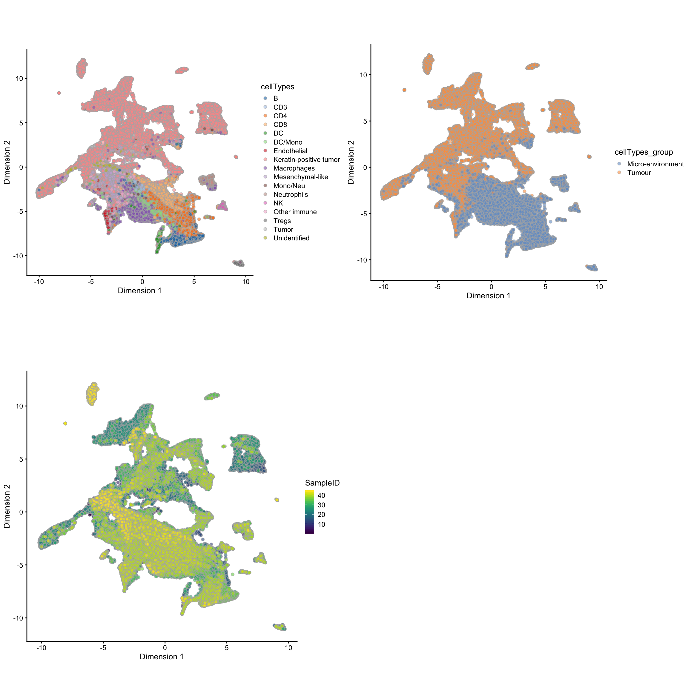
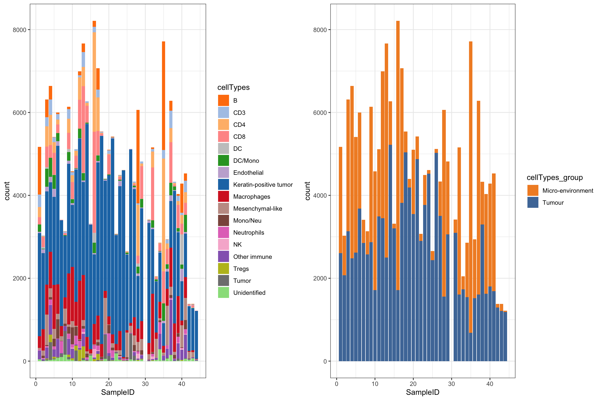
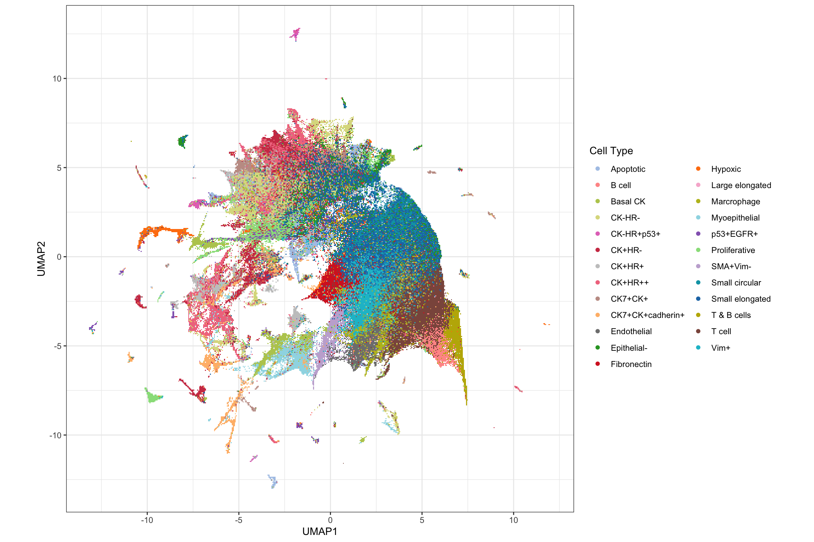
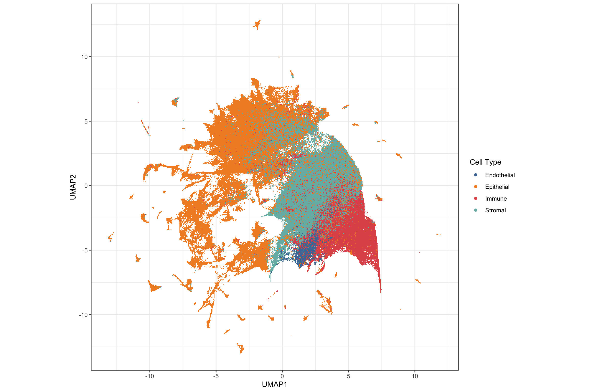
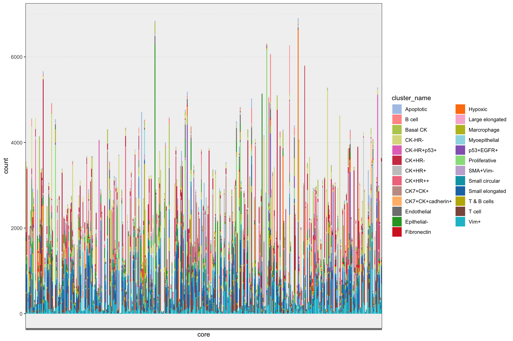
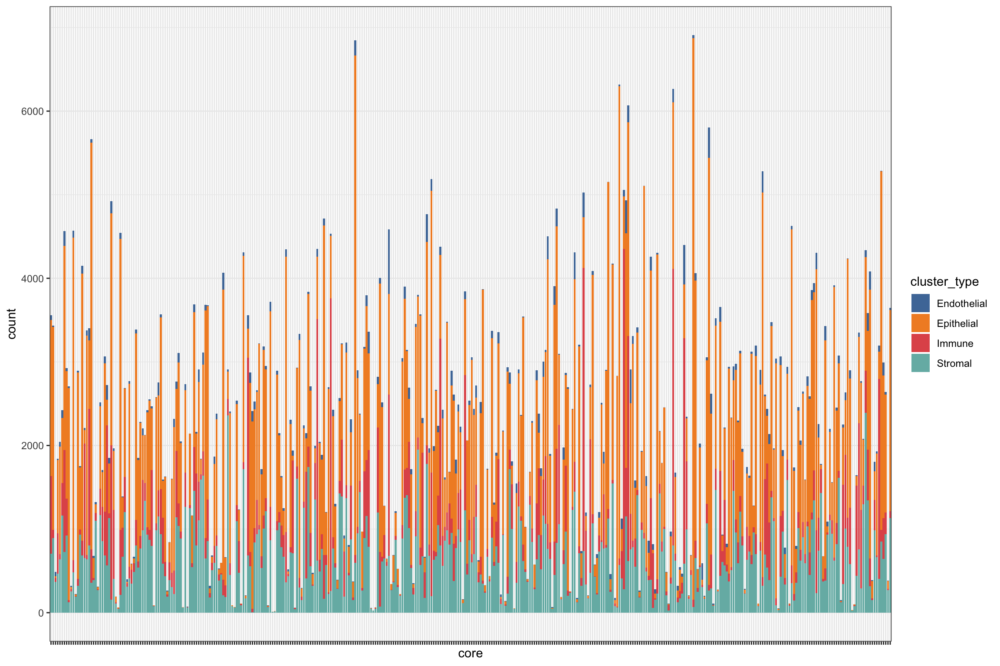
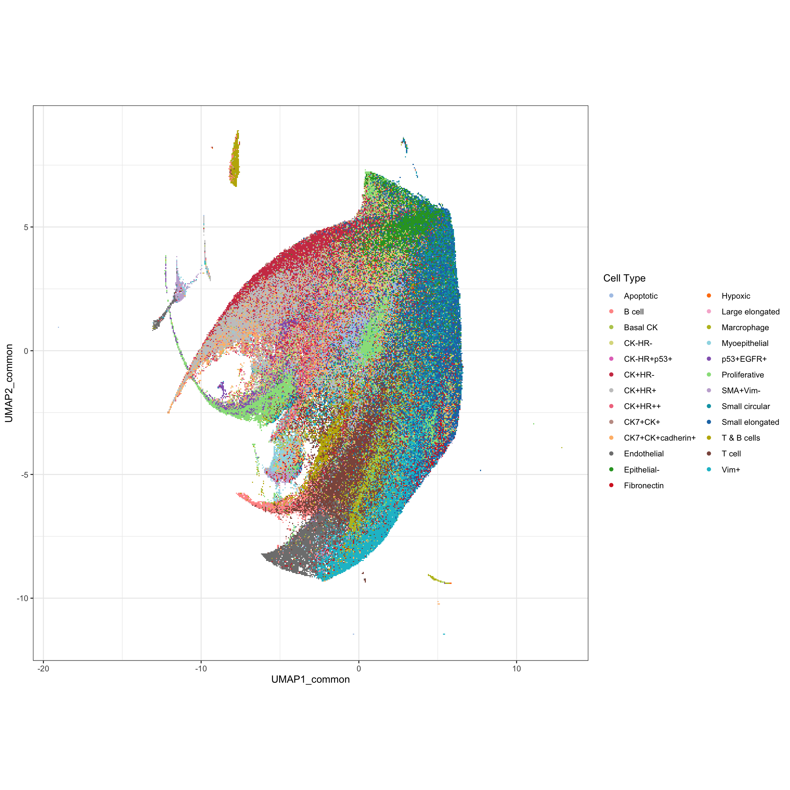
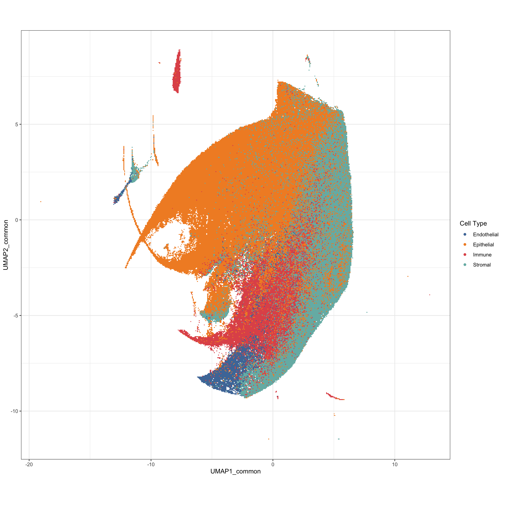
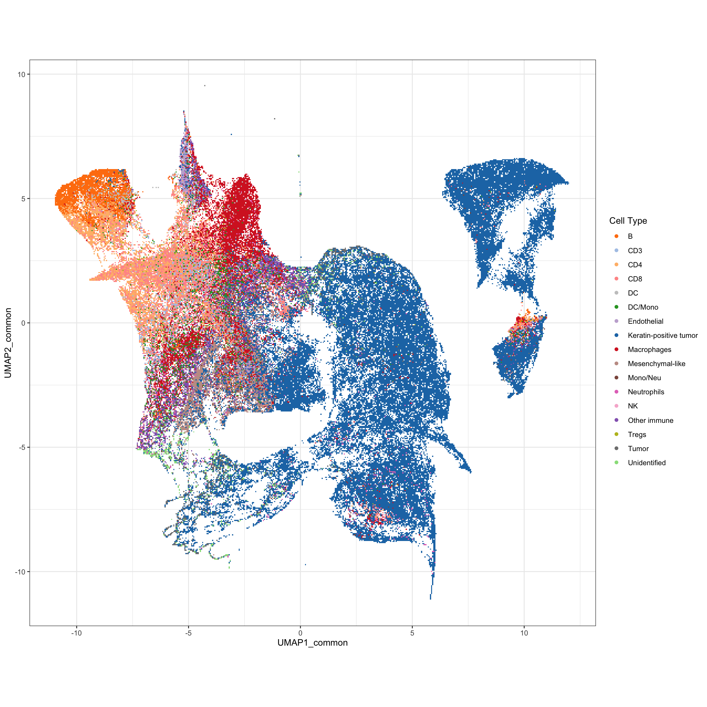
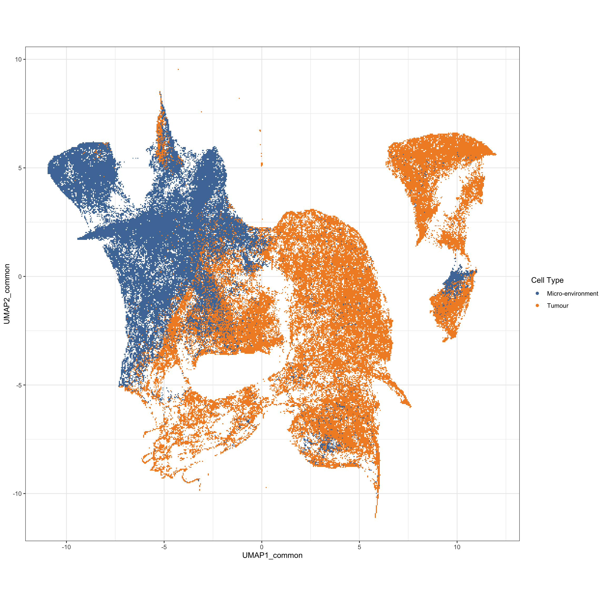

library(scater)
library(SingleCellExperiment)
library(ggthemes)
library(ggplot2)
library(ggridges)
library(plyr)
library(raster)
library(gridExtra)
library(sp)
library(spatstat)
library(uwot)
library(pheatmap)
source("functions/image_analysis_function.R")
set.seed(2020)load("../../sc-targeted-proteomics/data/mibiSCE.rda")
mibi.sce## class: SingleCellExperiment
## dim: 49 201656
## metadata(0):
## assays(1): mibi_exprs
## rownames(49): C Na ... Ta Au
## rowData names(4): channel_name is_protein hgnc_symbol wagner_overlap
## colnames: NULL
## colData names(36): SampleID cellLabelInImage ...
## Survival_days_capped_2016.1.1 Censored
## reducedDimNames(0):
## spikeNames(0):
## altExpNames(0):cat("Patients information")## Patients informationtable(mibi.sce$SampleID)##
## 1 2 3 4 5 6 7 8 9 10 11 12 13 14 15 16
## 5167 3028 6315 6643 5406 5998 3410 3136 6139 4580 5112 6995 7665 6270 3315 8212
## 17 18 19 20 21 22 23 24 25 26 27 28 29 31 32 33
## 7071 5539 4400 5103 5423 3072 4490 4613 2658 5119 4332 6061 4819 3415 5158 2046
## 34 35 36 37 38 39 40 41 42 43 44
## 2856 7716 2939 6280 4330 4030 4285 4532 1380 1381 1217cat("Cell types informaton")## Cell types informaton# table(mibi.sce$tumor_group)
# table(mibi.sce$immune_group)
# rename the cell types
mibi.sce$cellTypes <- ifelse(as.character(mibi.sce$immune_group) != "not immune",
as.character(mibi.sce$immune_group),
as.character(mibi.sce$tumor_group))
table(mibi.sce$cellTypes)##
## B CD3 CD4
## 9134 3867 12443
## CD8 DC DC/Mono
## 15787 1275 5052
## Endothelial Keratin-positive tumor Macrophages
## 2089 102736 20687
## Mesenchymal-like Mono/Neu Neutrophils
## 8479 3113 3020
## NK Other immune Tregs
## 674 6943 1341
## Tumor Unidentified
## 3177 1839mibi.sce$cellTypes_group <- ifelse(as.character(mibi.sce$immune_group) != "not immune",
"Micro-environment",
"Tumour")
selected_chanel_mibi <- rownames(mibi.sce)[rowData(mibi.sce)$is_protein == 1]# color for mibi cell types
cellTypes_group_mibi_color <- tableau_color_pal("Tableau 10")(length(unique(mibi.sce$cellTypes_group)))
cellTypes_group_mibi_color <- c(cellTypes_group_mibi_color, "black")
names(cellTypes_group_mibi_color) <- c(unique(mibi.sce$cellTypes_group), "Background")
cellTypes_mibi_color <- tableau_color_pal("Classic 20")(length(unique(mibi.sce$cellTypes)))
cellTypes_mibi_color <- c(cellTypes_mibi_color, "black")
names(cellTypes_mibi_color) <- c(unique(mibi.sce$cellTypes), "Background")Visualising all cells using UMAP
## Dimension Reduction using UMAP
mibi.sce <- runUMAP(mibi.sce, exprs_values = "mibi_exprs",
feature_set = selected_chanel_mibi)
g1 <- plotUMAP(mibi.sce, colour_by = "cellTypes") +
theme(aspect.ratio = 1)
g2 <- plotUMAP(mibi.sce, colour_by = "cellTypes_group") +
theme(aspect.ratio = 1)
g3 <- plotUMAP(mibi.sce, colour_by = "SampleID") +
theme(aspect.ratio = 1)
grid.arrange(g1, g2, g3, ncol = 2)
Cell type composition
df_mibi <- data.frame(colData(mibi.sce))
g1 <- ggplot(df_mibi, aes(x = SampleID, fill = cellTypes)) +
geom_bar() +
theme_bw() +
scale_fill_manual(values = cellTypes_mibi_color) +
theme(legend.position = "right")
g2 <- ggplot(df_mibi, aes(x = SampleID, fill = cellTypes_group)) +
geom_bar() +
theme_bw() +
scale_fill_manual(values = cellTypes_group_mibi_color) +
theme(legend.position = "right")
grid.arrange(g1, g2, ncol = 2)
source("basel_preprocessing.R")sc_mat <- readRDS("../../sc-targeted-proteomics/output/basel_sc_mat.rds")
pg <- readRDS("../../sc-targeted-proteomics/output/basel_pg.rds")
meta <- readRDS("../../sc-targeted-proteomics/output/basel_meta.rds")
selected_chanel <- readRDS("../../sc-targeted-proteomics/output/basel_selected_chanel.rds")
dim(sc_mat)## [1] 844498 64sc_mat_norm <- apply(sc_mat, 2, scale)umap <- uwot::umap(sc_mat_norm[, selected_chanel])
saveRDS(umap, file = "../../sc-targeted-proteomics/output/basel_umap.rds")# color for mibi cell types
cellTypes_basel_color <- sort(c(tableau_color_pal("Classic 20")(20),
tableau_color_pal("Summer")(5)))
cellTypes_basel_color <- c(cellTypes_basel_color, "black")
names(cellTypes_basel_color) <- c(unique(pg$cluster_name), "Background")Visualising all cells using UMAP
basel_umap <- readRDS("../../sc-targeted-proteomics/output/basel_umap.rds")
library(scattermore)
pg$UMAP1 <- basel_umap[, 1]
pg$UMAP2 <- basel_umap[, 2]
g1 <- ggplot(pg, aes(x = UMAP1, y = UMAP2, color = cluster_name)) +
geom_scattermore() +
theme_bw() +
theme(aspect.ratio = 1) +
scale_color_manual(values = cellTypes_basel_color) +
labs(color = "Cell Type")
g1
g2 <- ggplot(pg, aes(x = UMAP1, y = UMAP2, color = cluster_type)) +
geom_scattermore() +
theme_bw() +
theme(aspect.ratio = 1) +
scale_color_tableau() +
labs(color = "Cell Type")
g2
Cell type composition
df_basel <- data.frame(pg)
g1 <- ggplot(df_basel, aes(x = core, fill = cluster_name)) +
geom_bar() +
theme_bw() +
scale_fill_manual(values = cellTypes_basel_color) +
theme(legend.position = "right",
axis.text.x = element_blank())
g1
g2 <- ggplot(df_basel, aes(x = core, fill = cluster_type)) +
geom_bar() +
theme_bw() +
scale_fill_tableau() +
theme(legend.position = "right",
axis.text.x = element_blank())
g2
# intersect(colnames(sc_mat), rownames(mibi.sce))
# colnames(sc_mat)[!colnames(sc_mat) %in% rownames(mibi.sce)]
rownames(mibi.sce)[!rownames(mibi.sce) %in% colnames(sc_mat)]## [1] "C" "Na" "Si" "P" "Ca"
## [6] "Fe" "dsDNA" "Background" "B7H3" "FoxP3"
## [11] "Lag3" "CD4" "CD16" "CD56" "OX40"
## [16] "PD1" "CD31" "PD-L1" "CD209" "CD11c"
## [21] "CD138" "CD163" "CSF-1R" "CD8" "IDO"
## [26] "Keratin17" "CD63" "CD45RO" "Beta catenin" "HLA-DR"
## [31] "CD11b" "H3K9ac" "Pan-Keratin" "phospho-S6" "MPO"
## [36] "Keratin6" "HLA_Class_1" "Ta" "Au"rownames(mibi.sce)[rownames(mibi.sce) == "phospho-S6"] <- "pS6"
rownames(mibi.sce)[rownames(mibi.sce) == "CD31"] <- "vWF"
rownames(mibi.sce)[rownames(mibi.sce) == "Pan-Keratin"] <- "panCK"
common_anti <- intersect(colnames(sc_mat), rownames(mibi.sce))
cat("Common protein between two datasets")## Common protein between two datasetscommon_anti## [1] "EGFR" "Ki67" "SMA" "Vimentin" "p53" "panCK"
## [7] "CD20" "vWF" "H3K27me3" "CD45" "CD68" "CD3"
## [13] "pS6"length(common_anti) ## [1] 13mibi_exprs <- assay(mibi.sce, "mibi_exprs")
mibi_exprs_common <- mibi_exprs[common_anti, ]
sc_mat_common <- t(sc_mat_norm[, common_anti])umap_common <- uwot::umap(t(sc_mat_common))
saveRDS(umap_common, file = "../../sc-targeted-proteomics/output/basel_umap_common.rds")
umap_mibi_common <- uwot::umap(t(mibi_exprs_common))
saveRDS(umap_mibi_common, file = "../../sc-targeted-proteomics/output/mibi_umap_common.rds")basel_umap_common <- readRDS("../../sc-targeted-proteomics/output/basel_umap_common.rds")
pg$UMAP1_common <- basel_umap_common[, 1]
pg$UMAP2_common <- basel_umap_common[, 2]
g1 <- ggplot(pg, aes(x = UMAP1_common, y = UMAP2_common, color = cluster_name)) +
geom_scattermore() +
theme_bw() +
theme(aspect.ratio = 1) +
scale_color_manual(values = cellTypes_basel_color) +
labs(color = "Cell Type")
g1
g2 <- ggplot(pg, aes(x = UMAP1_common, y = UMAP2_common, color = cluster_type)) +
geom_scattermore() +
theme_bw() +
theme(aspect.ratio = 1) +
scale_color_tableau() +
labs(color = "Cell Type")
g2
mibi_umap_common <- readRDS("../../sc-targeted-proteomics/output/mibi_umap_common.rds")
df_mibi$UMAP1_common <- mibi_umap_common[, 1]
df_mibi$UMAP2_common <- mibi_umap_common[, 2]
g1 <- ggplot(df_mibi, aes(x = UMAP1_common, y = UMAP2_common, color = cellTypes)) +
geom_scattermore() +
theme_bw() +
theme(aspect.ratio = 1) +
scale_color_manual(values = cellTypes_mibi_color) +
labs(color = "Cell Type")
g1
g2 <- ggplot(df_mibi, aes(x = UMAP1_common, y = UMAP2_common, color = cellTypes_group)) +
geom_scattermore() +
theme_bw() +
theme(aspect.ratio = 1) +
scale_color_tableau() +
labs(color = "Cell Type")
g2
sessionInfo()## R version 3.6.1 (2019-07-05)
## Platform: x86_64-apple-darwin15.6.0 (64-bit)
## Running under: macOS Catalina 10.15.4
##
## Matrix products: default
## BLAS: /Library/Frameworks/R.framework/Versions/3.6/Resources/lib/libRblas.0.dylib
## LAPACK: /Library/Frameworks/R.framework/Versions/3.6/Resources/lib/libRlapack.dylib
##
## locale:
## [1] en_AU.UTF-8/en_AU.UTF-8/en_AU.UTF-8/C/en_AU.UTF-8/en_AU.UTF-8
##
## attached base packages:
## [1] stats4 parallel stats graphics grDevices utils datasets
## [8] methods base
##
## other attached packages:
## [1] RColorBrewer_1.1-2 survminer_0.4.6
## [3] ggpubr_0.2.4 magrittr_1.5
## [5] survival_3.1-8 stringr_1.4.0
## [7] pheatmap_1.0.12 maptools_0.9-9
## [9] sf_0.8-1 preprocessCore_1.48.0
## [11] scattermore_0.6 uwot_0.1.4
## [13] Matrix_1.2-18 data.table_1.12.6
## [15] SpatEntropy_0.1.0 spatstat_1.63-3
## [17] rpart_4.1-15 nlme_3.1-141
## [19] spatstat.data_1.4-3 gridExtra_2.3
## [21] ggridges_0.5.1 raster_3.0-7
## [23] sp_1.3-2 plyr_1.8.4
## [25] ggthemes_4.2.0 scater_1.13.7
## [27] ggplot2_3.2.1 SingleCellExperiment_1.8.0
## [29] SummarizedExperiment_1.16.0 DelayedArray_0.12.0
## [31] BiocParallel_1.20.0 matrixStats_0.55.0
## [33] Biobase_2.46.0 GenomicRanges_1.38.0
## [35] GenomeInfoDb_1.22.0 IRanges_2.20.1
## [37] S4Vectors_0.24.3 BiocGenerics_0.32.0
##
## loaded via a namespace (and not attached):
## [1] ggbeeswarm_0.6.0 colorspace_1.4-1 ggsignif_0.6.0
## [4] deldir_0.1-25 class_7.3-15 XVector_0.26.0
## [7] BiocNeighbors_1.4.1 rstudioapi_0.10 farver_2.0.1
## [10] RSpectra_0.16-0 codetools_0.2-16 splines_3.6.1
## [13] knitr_1.26 polyclip_1.10-0 zeallot_0.1.0
## [16] broom_0.5.2 km.ci_0.5-2 compiler_3.6.1
## [19] backports_1.1.5 assertthat_0.2.1 lazyeval_0.2.2
## [22] BiocSingular_1.2.0 htmltools_0.4.0 tools_3.6.1
## [25] rsvd_1.0.2 gtable_0.3.0 glue_1.3.1
## [28] GenomeInfoDbData_1.2.2 dplyr_0.8.3 Rcpp_1.0.3
## [31] vctrs_0.2.0 DelayedMatrixStats_1.8.0 xfun_0.11
## [34] lifecycle_0.1.0 irlba_2.3.3 goftest_1.2-2
## [37] zoo_1.8-6 zlibbioc_1.32.0 scales_1.1.0
## [40] spatstat.utils_1.17-0 yaml_2.2.0 KMsurv_0.1-5
## [43] stringi_1.4.3 e1071_1.7-3 rlang_0.4.2
## [46] pkgconfig_2.0.3 bitops_1.0-6 evaluate_0.14
## [49] lattice_0.20-38 purrr_0.3.3 tensor_1.5
## [52] labeling_0.3 cowplot_1.0.0 tidyselect_0.2.5
## [55] RcppAnnoy_0.0.14 R6_2.4.1 generics_0.0.2
## [58] DBI_1.0.0 pillar_1.4.2 foreign_0.8-72
## [61] withr_2.1.2 mgcv_1.8-28 units_0.6-5
## [64] abind_1.4-5 RCurl_1.95-4.12 tibble_2.1.3
## [67] crayon_1.3.4 survMisc_0.5.5 KernSmooth_2.23-15
## [70] rmarkdown_1.18 viridis_0.5.1 grid_3.6.1
## [73] digest_0.6.23 classInt_0.4-2 xtable_1.8-4
## [76] tidyr_1.0.0 RcppParallel_4.4.4 munsell_0.5.0
## [79] beeswarm_0.2.3 viridisLite_0.3.0 vipor_0.4.5